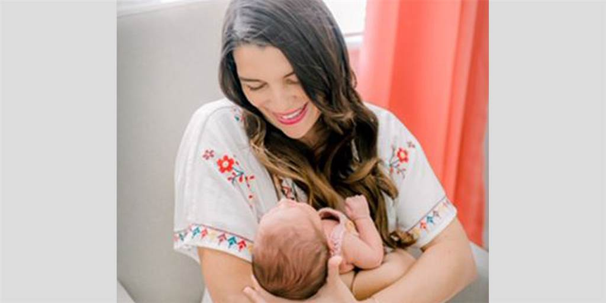
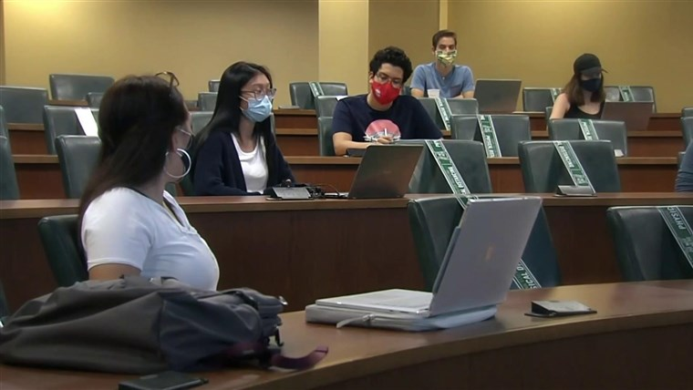

Young people are at risk of severe Covid-19 illness
Before she contracted Covid-19 in June, Stephanie Moir ran almost every day, pushing her two young children in a jogging stroller.Now she has trouble just getting out of bed and showering.She's been dealing with the disease for months, and there's still no end in sight.
Her battle has included eight trips to the emergency room and two hospital stays for a range of problems, including pneumonia, recurring diarrhea, a racing heartbeat, infections, kidney problems, muscle weakness and electrolyte imbalances.She's lost 30 pounds.
'I thought I was a healthy 33-year-old,' said Moir, a mental health counselor in Tampa, Florida.'I've never had a history of anything remotely like this.'
Full coverage of the coronavirus outbreak
Moir has seen 20 different health care providers, among them numerous specialists, and taken various medications and supplements, but a cure remains elusive.She takes comfort in the support she gets from family, friends and an online community, where she connects with other so-called long-haulers who also are trying to cope with persistent symptoms.
'I count my 'good days,' and I think the longest amount of good days I've had so far has been eight days in a row,' Moir said.'And what I mean by 'good days' are days where I literally don't feel like I'm about to die or need to go to the ER or feel like I'm losing my ability to walk.'
While young adults may think they are strong and invincible, doctors warn that Covid-19 can strike them with a vengeance, too.
Recently, the family of Dr. Adeline Fagan, 28, an OB-GYN resident in Houston, announced that she had died from the virus after a long hospital stay.
Overnight, Dr. Adeline Fagan succumbed to COVID19.Another bright light gone too soon.At 28, her fellow obgyn residents knew her as radiating kindness.To her sisters and family, I grieve with you.To my fellow healthcare workers, please continue to be careful.She is us.😥 pic.twitter.com/rLSX3jMxbP— Jesse O’Shea MD, MSc (@JesseOSheaMD) September 19, 2020
And Natalie Hakala, 22, was a healthy college runner before she needed to go to the emergency room in August after she tested positive for Covid-19, and she's still not fully recovered.
New findings published this month further reveal how severely Covid-19 can affect young adults.A research paper published in JAMA Internal Medicine found that among more than 3,200 adults ages 18 to 34 who were hospitalized with the disease, 21 percent required intensive care, 10 percent required mechanical ventilation and nearly 3 percent — 88 patients — died.Of those who survived, 3 percent — 99 patients — had to be discharged to another health care facility to continue their recoveries.
'While the vast majority of young adults who get Covid are not going to require hospitalization, those who do have really high risk for these adverse outcomes,' said the study's author, Dr.Scott Solomon, a professor of medicine at Harvard Medical School and Brigham and Women's Hospital in Boston.'It is not trivial.'
The research is worrisome because the incidence of Covid-19 in the United States is now highest among young adults ages 20 to 29, who from June to August accounted for more than 20 percent of all confirmed cases, according to the latest figures from the Centers for Disease Control and Prevention, reported Wednesday.Adults ages 30 to 39 made up the second-largest group of cases.
Young people should not assume they are immune to the consequences of this disease, and they should do everything they can to avoid it.
As young adults return to college campuses — and parties — multiple outbreaks already have been reported across the nation.Doctors are concerned about the spreading infections and the serious cases that can result.
'We're seeing a really rising incidence of Covid-19 in young people, and that's in part due to activity over the summer, and obviously we're all very worried about this as they come back to colleges,' Solomon said.
'It's unfortunate, but I think that we are likely to see an increased percentage of young people who experience these bad outcomes as the number of infections in this group goes up,' he said.
Solomon and colleagues used a large health care database to look at serious Covid-19 illnesses in young adults hospitalized in April, May or June.Of the more than 1,000 U.S. hospitals in the database, which treated a total of 63,103 Covid-19 patients during the study period, 3,222 patients, or 5 percent, were young adults admitted to 419 hospitals.
Overall, 58 percent of the young adult patients were men, and 57 percent were Black or Hispanic.More than a third were obese, including 25 percent who were morbidly obese (with body mass indexes of 40 or higher), 18 percent had diabetes, and 16 percent had hypertension.The young adult patients who had more than one of those underlying health conditions had the same risks from Covid-19 as middle-age adults without those conditions, the study found.
Results also showed that the risks of dying or needing mechanical ventilation were more than double in young adult patients who were either morbidly obese or had hypertension.
Sept.16, 202003:02
While the study's in-hospital death rate of 2.7 percent for young adult Covid-19 patients was lower than that for older adults, it is about double that of young adults who've had heart attacks.
Although young people often tend to discount health risks in general, they shouldn't downplay the threat of Covid-19, Solomon stressed.They need to take precautions to protect themselves and others, he said, and those who have underlying health conditions should be especially vigilant.
'Young people should not assume that they are immune to the consequences of this disease, and they should do everything they can to avoid it,' Solomon said.
In a commentary that accompanied the paper, JAMA Internal Medicine's deputy editor, Dr.Mitchell Katz, president and CEO of NYC Health and Hospitals, wrote that the findings show that 'Covid-19 does not spare young people.'
The paper 'establishes that Covid-19 is a life-threatening disease in people of all ages and that social distancing, facial coverings, and other approaches to prevent transmission are as important in young adults as in older persons,' he wrote.
Dr.Gregory Poland, an infectious diseases expert at the Mayo Clinic in Rochester, Minnesota, recommended that people of all ages with uncontrolled diseases like hypertension and diabetes work with their physicians to make sure the conditions are properly treated and that those who are obese should strive for healthier weights.
'If you have these risk factors, it's really important that you get them under control,' Poland said.'The better controlled they are, the lower your susceptibility and risk.'
Early in the pandemic, Covid-19 often was positioned as an 'older-person disease,' but researchers now know that isn't an accurate portrayal, said the president of the Society of Critical Care Medicine, Dr.Lewis Kaplan, a professor of surgery at the Hospital of the University of Pennsylvania in Philadelphia.
Even people who are young and don't have underlying health conditions may get very sick, and there's no way to know ahead of time how someone will respond to the infection, Kaplan said.Importantly, young adults who don't get very sick can still spread the virus to more at-risk populations.
Download the NBC News app for full coverage of the coronavirus outbreak
'There is not a no-risk population,' he said.'Youth does not confer safety, and it should not support complacency.'
After all that Moir has been through, she feels lucky to be alive.'When you're young, you think you're invincible in many ways, and we're not,' she said.
Posted On: 2020-09-28T12:56:00


Content Date: 2020-09-28
Download Date: 2021-04-08
Document ID: L0C049MZH